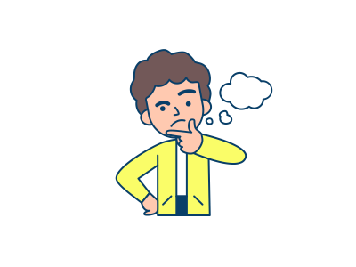

O que é Criatividade?
A criatividade não é um dom, mas uma habilidade do ser humano ligada à nossa capacidade de invenção, reinvenção e inovação. Assim como qualquer competência, é possível praticar a criatividade para despertá-la e desenvolvê-la, tornando-se uma pessoa mais criativa.
Por que ela é importante para um dev ou deva ?
A criatividade é importante, pois desenvolver um site ou um app por exemplo, exige entregar uma melhor experiencia de usuário, de forma usual e que chame a atenção.
Como melhorar a Criatividade?
- Tenha um propósito.
- Estude muito.
- Saia da sua zona de conforto.
- Fuja da rotina.
- Observe o mundo ao seu redor.
- Relacion-se com pessoas ao redor.
- Peça ajuda.
- Decanse Bastante.
- Coloque as ideias no papel.
- Não tenha medo de errar.
- Crie. Crie qualquer coisa.
As fases para o surgimento de uma ideia, segundo Graham Wallas
- Preparação: consiste no estudo preparatório acerca de um tema.
- Incubação: o tempo em que a ideia é formulada dentro da mente, de maneira despercebida pelo ser.
- Iluminação: é quando a ideia chega à consciência
- Verificação: ocorre ao “checar” se a ideia é realmente boa.
E quais são os tipos de criatividade ?
-
Criatividade Individual:
Como o nome entrega, essa é a forma criativa que uma pessoa só expressa.
-
Criatividade coletiva, de grupo ou criatividade em equipe:
Já a coletiva, é aquela que um grupo ou organização expressa. Serve para criar ou otimizar processos, produtos e serviços. É um caminho relativamente mais ágil para atualizar e modernizar os métodos de gestão e de produção.
Conclusão
A criatividade, tanto no mundo de desenvolvimento, quanto em qualquer outro mundo, deve ser estimulada e nunca forçada, e como qualquer hábito, pode levar um tempo para integrar a sua rotina. Persista e excelentes resultados virão !